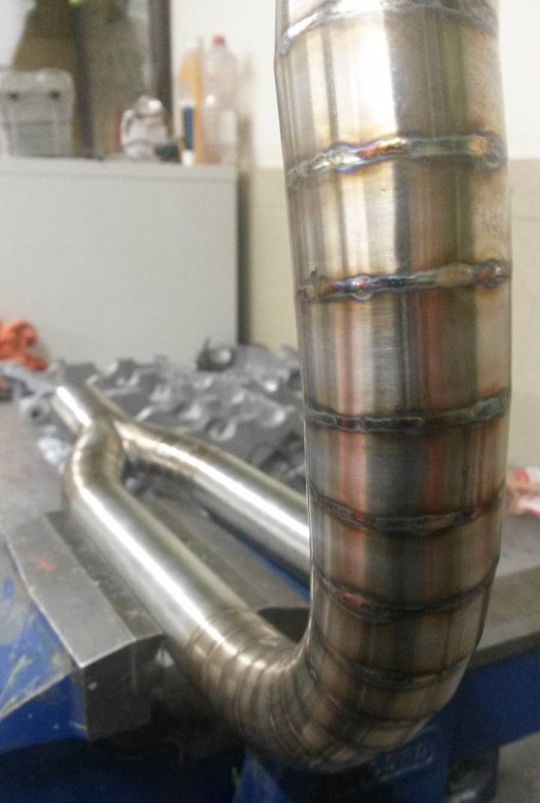

Grade 2 fusion welded titanium silencer just 510g
The history behind it
The journey into exhausts was tainted by cost. I bought quite a trick pipe bending table but it just wasn’t upto thin walled tube, especially the shapes I wanted to produce. I really needed to be able to offer each section up to the engine and frame which is nearly impossible to do with both cold and hot bends. The sand filled bend is a good one but only if the exhaust comes first and the rest of the body and electrics follows. My first few systems were done the hard way, I couldn’t get the fusion weld right because I couldn’t afford the right kit. I was cutting each section with an angle grinder and trying to get them flat with a flap wheel. Do that 100 times and you’ll start dreaming of a chop saw too. Invariably there were gaps because I didn’t put argon in the pipes too (didn’t want to use up too much expensive gas back then) By the time I came around to make my first v4 system I did a back to back trial on the dyno with a mandrel bent tube system and discovered something interesting which do this day I still don’t fully understand but I know roughly how to repeat it and all I’ll say is it puts a smile on my face when I hear folk stating exhausts are all about smooth radius bends and back pressure. It’s something you can’t achieve with an 'off the shelf systems'; but they sell enough of them so why change?Where it came from
Most lobster sections are made for aesthetic reasons. I have come across small articles referring to the unpredictable wizardry of tumbling harmonic waves and the scavenging pressures they induce but they all concluded it doesn’t make sense. It would be interesting to hear if others have played with this and what they found.More is better

It’s a real shame that exhaust manufactures don’t advertise the benefits and trade off’s for various exhaust designs. They seem to offer the one and only ‘off the shelf’ solution for that bike with a choice of pretty silencers. There’s not one tyre that does all grounds and conditions; most have a sticker with ratings for economy and wet road handling. Imagine what a tyre would perform like if they got rid of this and kept you in the dark and simply gave you what you thought was best for everyone and how much better the bike next to you would go if he knew what tyre he (or she) needed! As competition and skills develop the demand for performance is greater. Unfortunately the average buyer wants a top end power ballad from their exhaust, so the market has followed the demand; can’t blame them. It's perhaps fortunate for me and perhaps only a handful of others that utilise a well designed exhaust which can really complement a high performance engine. The significance is far greater for 2 strokes but certainly credible for 4 strokes.
Fusion welded header pipes